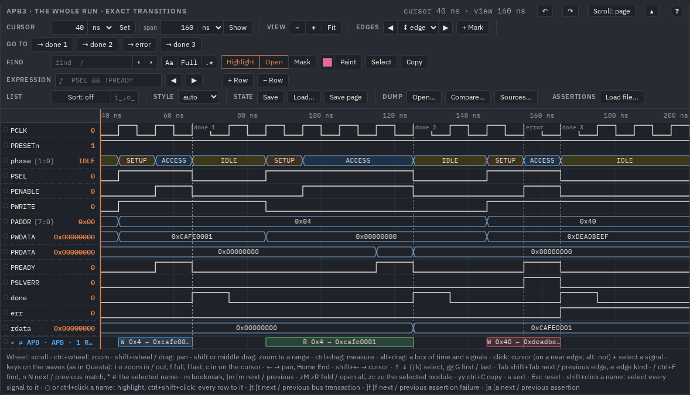
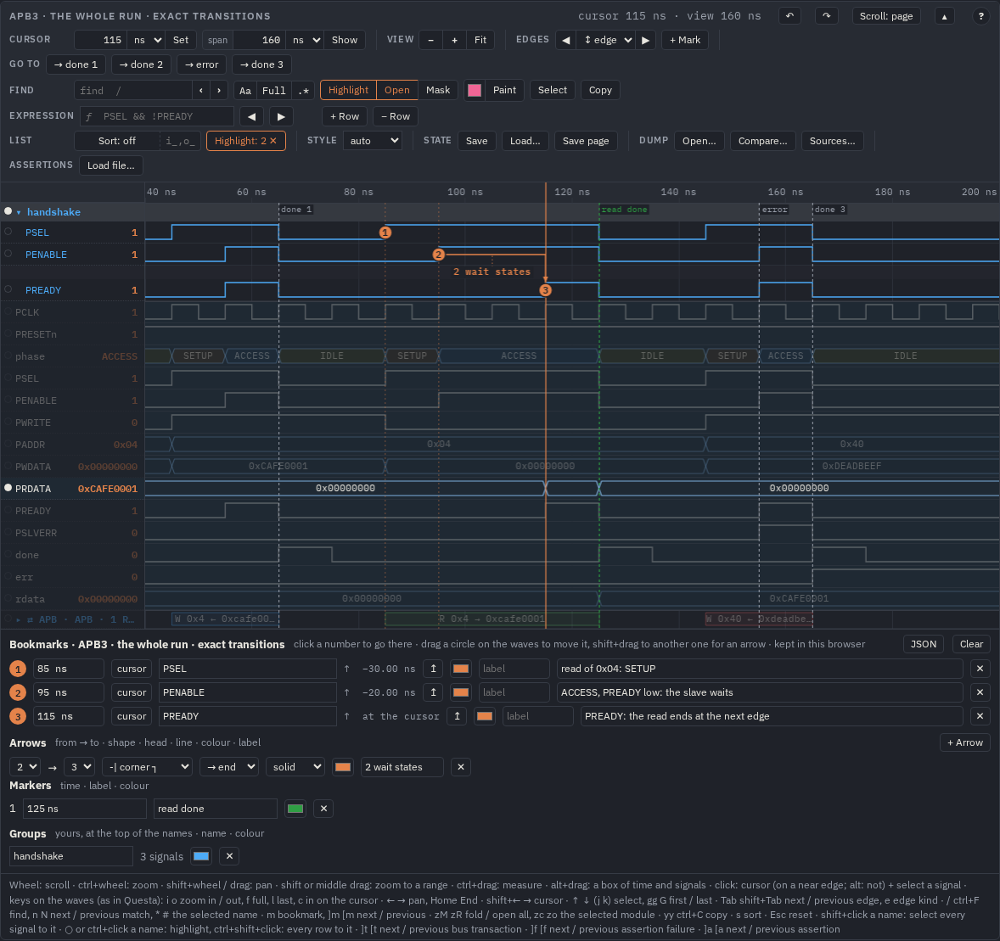

Commands and scripts
Whatever the buttons, the menus and the lists of a viewer do, a command does by name:
{op: 'bookmark', t: '85ns', signal: 'PSEL', text: 'SETUP'}. The same commands run in three places — the browser's
console on an open page, tools/viewedit.py on a page's file, and an AI agent over MCP, live in the page a person has
open. This guide marks up one APB read all three ways.
One set of commands, three places
| Where | Runs on | Good for |
|---|---|---|
the console: view.run([…]) | a viewer of an open page | trying a command, a bookmarklet, your own page's script |
tools/viewedit.py | a page's file (make html, mkhtml.py) or a saved
.view.json | a shell, a CI job: a page that opens already marked up |
MCP: view_edit, view_get | a page's file, or live the page in a browser or a VS Code tab | an agent that explains a failure to a person (AI agents) |
Every command and its arguments are listed by WaveLens.commands(), in the table of
USAGE.md § Commands and edits and in docs/index.html § API.
In the console
Open out/examples/apb/apb.html (after make examples) and its exact view, the one the pictures show:

0x04 with two wait states, then a write
to an unmapped address.In the browser's console (F12), take the viewer and run a list of commands:
const v = WaveLens.views().find(v => v.editKey() === 'exact'); // or element.waveView, WaveLens.views()[i]
await v.run([
{op: 'bookmark', t: '85ns', signal: 'PSEL', text: 'read of 0x04: SETUP'},
{op: 'bookmark', t: '95ns', signal: 'PENABLE', text: 'ACCESS, PREADY low: the slave waits'},
{op: 'bookmark', t: '115ns', signal: 'PREADY', text: 'PREADY: the read ends at the next edge'},
{op: 'arrow', from: 2, to: 3, label: '2 wait states', shape: '-|'},
{op: 'marker', t: '125ns', label: 'read done', color: '#2f9e44'},
{op: 'group', name: 'handshake', signals: ['PSEL', 'PENABLE', 'PREADY'], color: '#4dabf7'},
{op: 'highlight', add: ['handshake', 'PRDATA']},
{op: 'cursor', t: '115ns'}]);
handshake at the top of the names, the rest dimmed but PRDATA.run returns the results in order — {op: 'bookmark', n: 1}, {op: 'group', name: 'handshake',
signals: 3, at: 1} … — and {op, error} for a command that could not run (the others still do; a name that
matches nothing names the similar ones). The whole list is redrawn once and is one step to undo: ctrl+Z takes it
all back (the cursor and the window are not steps: the cursor stays at 115 ns), ctrl+shift+Z brings it again.
Times and signals
- Times are a text with a unit —
'85ns','2.5us','0.1µs'— or a number. A number is in model units in the console and inviewedit.py: ps on the waves of a dump, cycles on a hand-written WaveDrom diagram withouttime(a state read back with{op: 'state'}has the same units). Over MCP a number is in ns, and so are the timesview_getgives back. A text with a unit means the same everywhere. - A signal is its full path, its name, the end of its path (
u_regs.PSEL), or a*pattern ('P*DATA'), alone, in a list or as a text with commas. A name that several signals have takes the one nearest the top when only one is there (a net seen at several levels); else it is an error that names them — give more of the path, or a*pattern for all of them. - Bookmarks are numbered 1, 2, …; arrows go
fromone numbertoanother; markers and arrows have anidas listed. Change one by naming it ({op: 'bookmark', n: 2, text: '…'}), delete one with{op: 'bookmark', n: 2, delete: true}(n: 'all': every one; its arrows go too); a marker with{op: 'marker', id: 1, delete: true}. A bookmark'slabelis a short text by its circle,lift: 'below'puts it in a lane under its signal; an arrow's label takes{dt},{cycles},{cycles:PCLK}, filled at its ends. - Spans:
{op: 'span', from: '45ns', to: '65ns', label: 'write', color: 'c7'}shades a stretch of time across the rows (signals: only those), with its label; changed byid, deleted as a marker is.
The commands that only read: state (what Save writes), rows (the signals in
display order), picture (PNG as base64, SVG or WaveDrom). find answers its matches too, but it sets the
find field and its options as typing there does. A command that reads the rows as laid
out sees what the ones before it in the list did: a picture after a hide is without that row.
On a page's file: viewedit.py
The same list, run on the file instead of an open page — from a shell, a script or a CI job:
python3 -I tools/viewedit.py out/examples/apb/apb.html --views # the views of the page, their keys and the revision of their edits
python3 -I tools/viewedit.py out/examples/apb/apb.html --view exact --ops @read.json
python3 -I tools/viewedit.py out/examples/apb/apb.html --get # the edits as JSON
python3 -I tools/viewedit.py saved.view.json --model page.html --ops '[{"op": "bookmark", "t": "60ns", "signal": "PSEL"}]'read.json is the list above as JSON. The page keeps its edits per view in a JSON block next to its data, with a new
revision each time. Whoever opens the file sees the marks; what this browser keeps of a viewer (bookmarks, groups, colours …) is
replaced once per revision, so what a person changes afterwards stays theirs until a newer revision comes. The commands that need the
values, the labels or the screen (edge, fit, picture, fsm, fsm_stats, fsm_go,
types) run only in a page.
A page made before the project was renamed to WaveLens (0.18) is refused: make it again with
make html or mkhtml.py.
Live, in a page someone has open
A page connected to an agent's MCP server (tools/wavemcp.py) takes the commands as they come: the agent's
view_edit puts a bookmark and it appears on the person's waves at once; what the person changes is what the agent reads
next with view_get. ● live in the bar's state group says the page is connected (a click disconnects). The link
stays on the machine (127.0.0.1, a key the server keeps in ~/.cache/wavelens/live-token). In VS Code the
same works for a dump open in a tab (VS Code). The details: AI agents (MCP).
A state, saved and loaded
{op: 'state'} returns what Save downloads as .view.json;
{op: 'set_state', state} puts one back as Load… does — a key it has replaces the viewer's
(null clears it), a key it leaves out stays. With Save page the whole page with every viewer's
state is one file to send (The viewer § Save and Load).